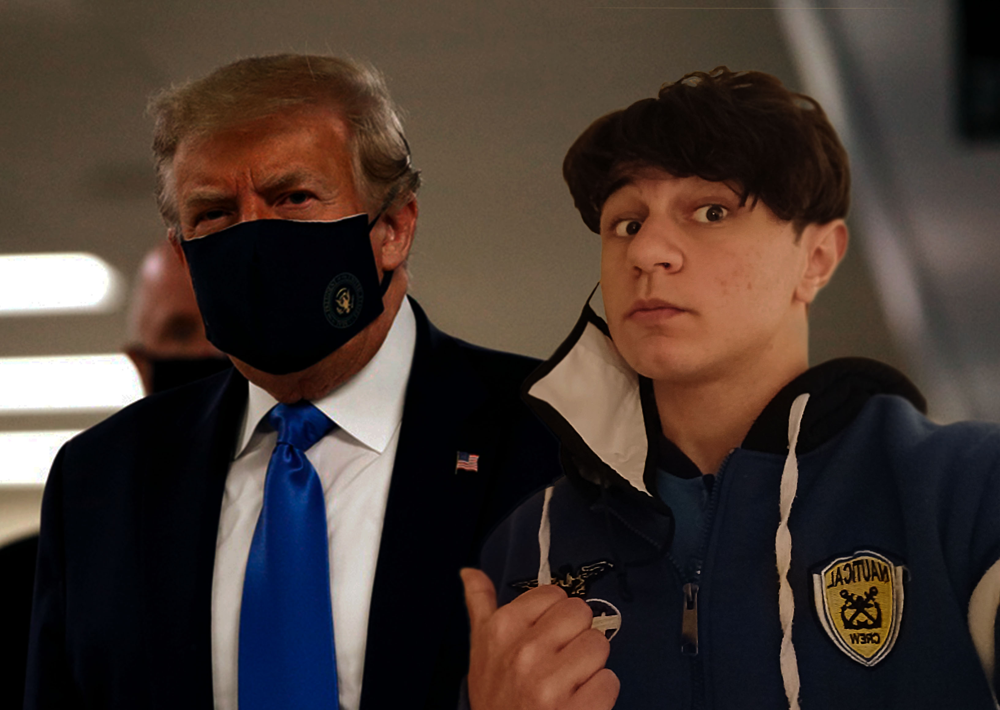

Photoshop Masking Experiment

The overall composition is a “joke”, were you have D. Trump (who in the past advocated against wearing a mask),seen in public wearing one, and me “next” to him removing it.
A link to 'introduction to masks' can be found below to the left;
Introduction to masking
Process:
- Import image as layer 01
- Rasterize layer 01
- Create layer mask for layer 01
- Quick Selection tool
- Select subject
- Save Selection to layer mask
- Erase some of the unnecessary selection
- Move and scale layer 01
- Import background as layer 02
- Scale background image and Crop
- Click on layer 01 mask and press CTRL+I to view mask
- Blur the edges of the mask and press CTRL+I to view the image
- Blur some edges of layer 01 as well to blend in with layer 02
- Adjust hue/saturation to -100 (black and white) so that colour levels will not be distracting
- Adjust brightness, exposure, colour levels (curves)
- Re-adjust saturation to +0
- Create Gradient map 01
- Choose Photographic toning (I chose 2nd row 2nd tone)
- Change the level of the gradient map from normal to soft light
- Save as PSD and JPEG formats